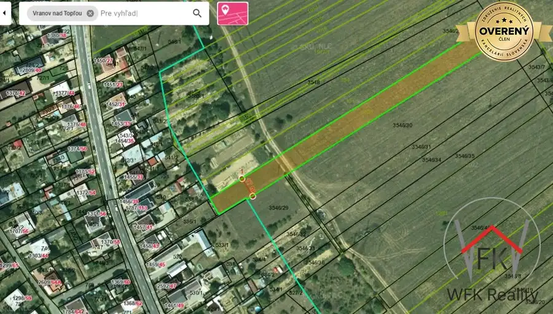
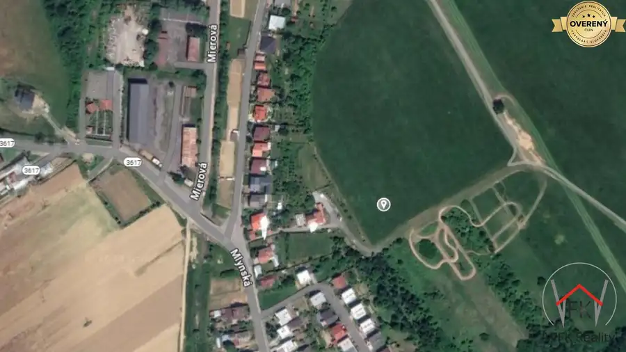
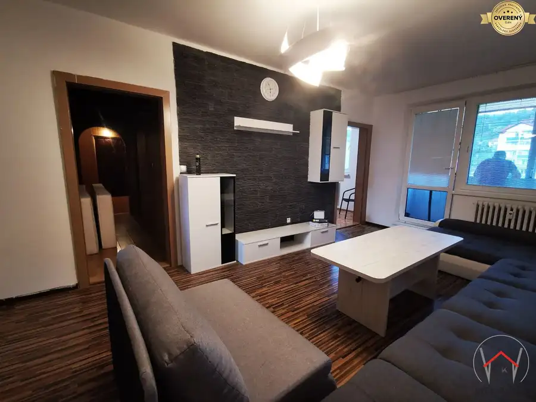

Rodinný dom s pozemkom 1780 m² v tichej lokalite Slovenská Kajňa
Slovenská Kajňa
- Dispozícia4-izbový
- Plocha1780 m²
- Poschodie0. z 1
- Stavnutná rekonštrukcia
- Vlastníctvoosobné
O nehnuteľnosti
Ponúkame na predaj samostatne stojaci rodinný dom v pôvodnom stave, situovaný na rozľahlom pozemku na konci obce Slovenská Kajňa. Nehnuteľnosť predstavuje ideálnu príležitosť pre klienta, ktorý hľadá projekt na kompletnú rekonštrukciu podľa vlastných predstáv v pokojnom prostredí s dostatkom súkromia.
---
TECHNICKÁ ŠPECIFIKÁCIA:
* Lokalita: Slovenská Kajňa, okres Vranov nad Topľou
* Typ: Samostatne stojaci rodinný dom
* Stav: Pôvodný, určený na kompletnú rekonštrukciu
* Dispozícia: 4 izby (z toho jedna obývacia izba prepojená s kuchyňou), kúpeľňa, WC
* Obytná plocha: cca 105 m²
* 1 nadzemné podlažie, kompletné podpivničenie, nevyužitá povala
* Celková výmera pozemku: 1780 m² (zastavané plochy a nádvoria: 853 m², záhrada: 927 m², šírka pozemku cca 18 m )
* Strecha: Pôvodná, eternitová krytina
* Okná a podlahy: Pôvodné drevené
* Kúrenie: Kotol na tuhé palivo
* Inžinierske siete: Elektrina, plyn, obecný vodovod, vlastná studňa, kanalizácia
* Príslušenstvo: Hospodárske budovy na pozemku, pivničné priestory
---
POPIS A POTENCIÁL NEHNUTEĽNOSTI:
Dom je postavený na slnečnom pozemku a vďaka svojmu pôvodnému stavu ponúka novému majiteľovi možnosť realizovať rekonštrukciu bez kompromisov. Dispozícia prízemia poskytuje približne 105 m² obytnej plochy. Celá stavba je podpivničená, čo vytvára rozsiahle skladovacie alebo technické zázemie.
Hlavným benefitom ponuky je pozemok s celkovou výmerou 1780 m², ktorý poskytuje mimoriadny priestor pre záhradkárčenie, chov zvierat alebo relax. Súčasťou areálu sú aj hospodárske budovy. Pre záujemcov o farmárčenie existuje možnosť prenajatia ďalších priľahlých pozemkov po dohode.
Lokalita na konci obce zaručuje maximálne súkromie a ticho. Okolitá príroda a blízkosť rekreačnej oblasti Domaša (1,5 km od vodnej nádrže Malá Domaša) pridávajú nehnuteľnosti na atraktivite.
ENERGETICKÝ CERTIFIKÁT:
Energetický certifikát k nehnuteľnosti nebol predložený.
Pre viac informácií alebo dohodnutie obhliadky ma neváhajte kontaktovať.
Parametre
| Rozloha pozemku | 927 m² |
|---|---|
| Zastavaná plocha | 853 m² |
| Celková rozloha | 1780 m² |
| Poschodie | prízemie |
| Počet poschodí | 1 |
| Počet izieb | 4 |
| Vlastníctvo | osobné |
| Stav | nutná rekonštrukcia |
| Odvoz odpadu | áno |
| Voda | verejný vodovod |
| El. napätie | 230/400V |
| Plyn | áno |
| Kanalizácia | áno |
| Kúpeľňa | áno |
| Vykurovanie | vlastné |
| Pivnica | áno |
| Inžinierske siete | áno |
| Zariadenie | nezariadený |
| Zateplený objekt | nie |
| Strecha | pôvodná |
| Krb | áno |
| Energetický certifikát | nie |
| Predzáhradka | áno |
| Bezbariérový prístup | nie |
| Okná | drevené |
| Terén | svahovitý |
| Prístupová cesta | asfaltová cesta |
| Dátum zverejnenia | 9. 7. 2026 |
Kde to je
Mohlo by Vás zaujímať

Pozemok2 68 700 €Exkluzívne na predaj pozemok vo Vranove n.T. Vranov nad Topľou 4580 m² WFK Reality ponúka vo výhradnom zastúpení na predaj pozemok vo Vranove n.T. Je vedený ako poľnohospodárska pôda, šírka pozemku je 17 m a celová…
Pozemok2 35 355 €Na predaj pozemok - Taňa, Vranov n.T. Vranov nad Topľou 2357 m² Hľadáte investičnú príležitosť, alebo miesto pre svoje budúce projekty? WFK Reality ponúka na predaj pozemok evidovaný ako orná pôda, ideálne pre…
Byt10 124 890 €PREDAJ: 3-izbový byt s loggiou, Sídlisko Lúčna, Vranov nad Topľou Vranov nad Topľou 3-izbový73 m²3. podlažie Realitná kancelária WFK Reality ponúka na predaj 3-izbový byt v žiadanej lokalite Sídlisko Lúčna vo Vranove nad Topľou. Nehnuteľnosť s celkovou…